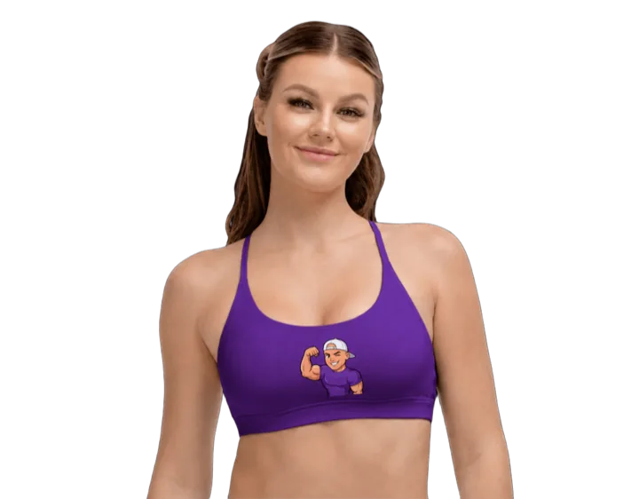
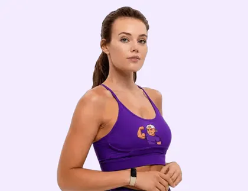
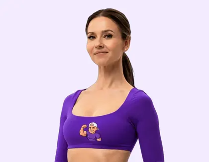

C
Carlão Personal das Estrelas
@oficial_carlaopersonal
SUA AVALIAÇÃO GRATUITA SE ENCERRA EM
03:00
Deixa eu começar te conhecendo. Quantos anos você tem?

Idade: 16-29

Idade: 30-39
Idade: 40-49

Idade: 50+